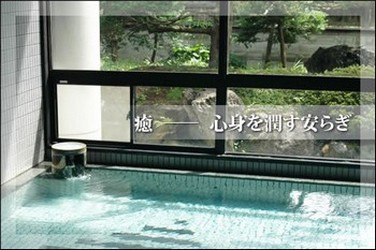
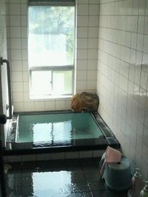
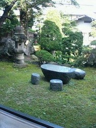
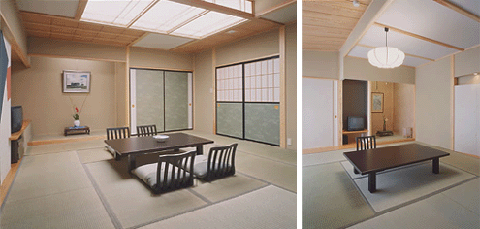
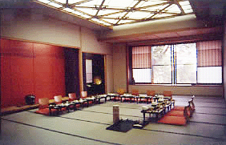

施設
風呂場
大きな湯船の温泉に入るのは実に気持ちのいいものです。でも人前で服を全部脱ぐのが嫌だという方のためには、小さな御家族用のお風呂もございます。
 
日本庭園
日本庭園も日本式の旅館にとって大事な要素です。左側の写真に見えるテーブルといすは近くの山から切り出された岩を用いて作られたものです。
 
客室
客室は典型的な和室です。写真の奥に見えるステージのようなところは
床の間と呼ばれ、絵、書、生け花が飾られます。客室に入る時は、他の家に入る時同様、靴を脱がなければなりません。畳の部屋ではくつ下は構いませんが、スリッパはご遠慮願います。

宴会場
吾妻荘には大小二つのカラオケ施設の付いた宴会場があります。大きい宴会場は60名のお客様が宴会できる広さです。
